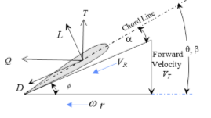
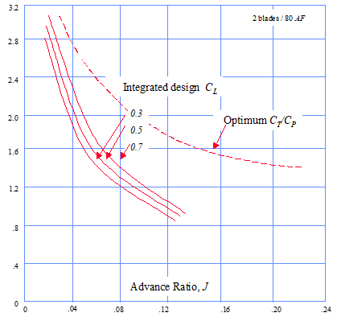
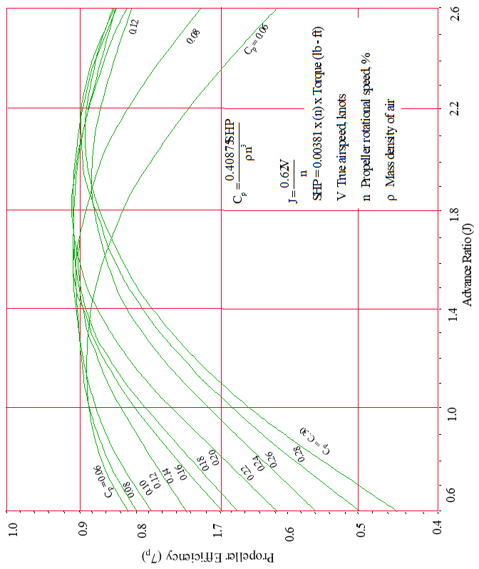
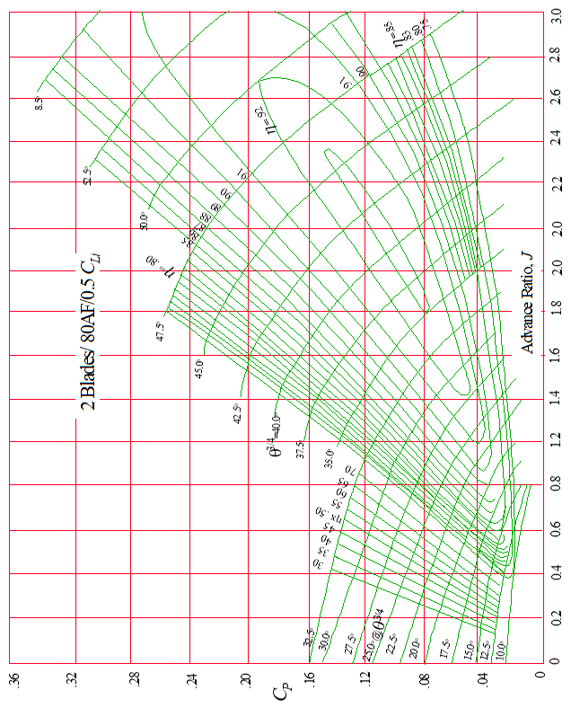
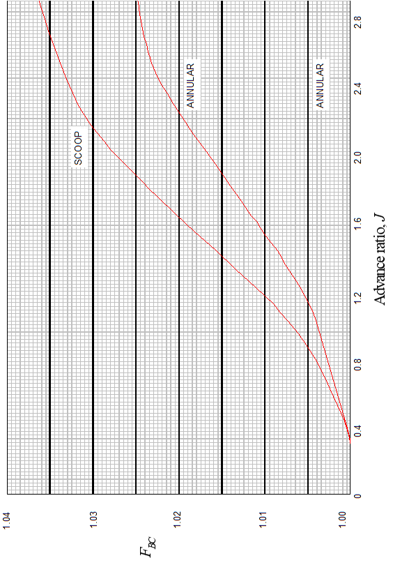
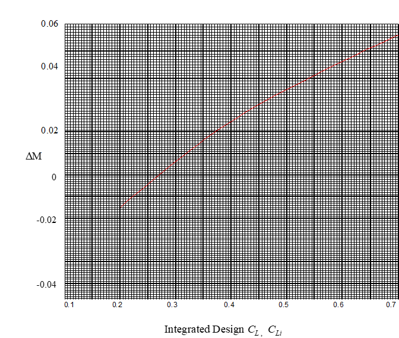
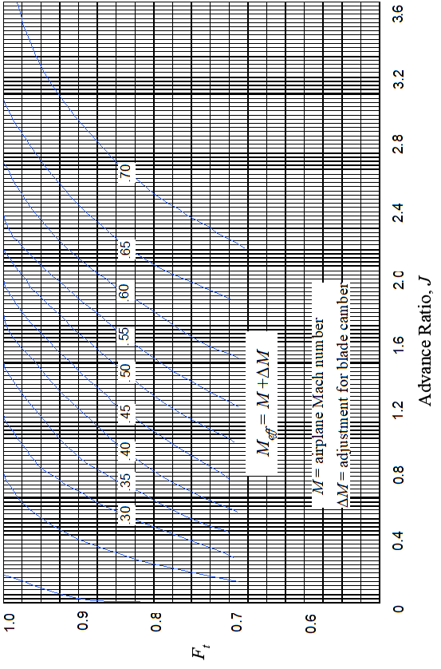
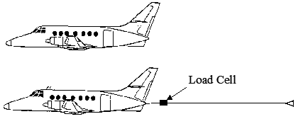

11 Propellers
11.1 Abbreviations and Terminology
Abbreviations
| \(\mathrm{AF}\) |
\[\begin{equation*} \text{activity factor } = \frac{100\,000}{16} \int_{0.15}^{1.00} \left( \frac{b}{D} \right) x^3 dx \end{equation*}\] | |\(b\) |blade section width \(\left[ \text{feet} \right]\) | |\(B\) |number of blades| |\(\mathrm{BHP}\) |brake horsepower (measured at engine crankshaft)| |\(C_{L_D}\) |blade section design lift coefficient| |\(C_{L_i}\) | \[\begin{equation*} \text{integrated design lift coefficient } = 4 \int_{0.15}^{1.00} \left( C_{L_D} \right) x^3 dx \end{equation*}\] | |\(C_P\) |power (absorbed) coefficient| |\(C_T\) |thrust coefficient| |\(D\) |propeller diameter \(\left[ \text{feet} \right]\) | |\(f_c\) |ratio of speed of sound at standard day sea level to speed of sound at operating condition \[\begin{equation*} f_c = \frac{1}{\sqrt{\theta}} \end{equation*}\] | |\(\mathrm{GR}\) |gear ratio, propeller speed/engine speed| |\(\mathrm{HP}\) |horsepower \(\left (1\mathrm{HP} = 550 \text{ ft-lb/sec} \right)\) | |\(J\) | \[\begin{equation*} \text{Propeller advance ratio } = \frac{V_T}{nD} \left[ \text{nondimensional} \right] \end{equation*}\] | |\(M\) |aircraft Mach number| |\(\Delta M\) |Mach number adjustment for effect of blade camber| |\(N\) |propeller speed, revolutions per minute \(\left[ \text{RPM} \right]\) | |\(n\) |propeller speed, revolutions per second| |\(N_e\) |engine speed \(\left[ \text{RPM} \right]\) | |\(P\) |power output \(\left[ \frac{\text{ft-lb}}{\text{sec}} \right]\) | |\(P_a\) |ambient pressure| |\(q\) |dynamic pressure| |\(Q\) |torque \(\left[ \text{ft-lb} \right]\) | |\(R\) |blade radius at propeller tip \(\left[ \text{feet} \right]\) | |\(r\) |radius at blade element \(\left[ \text{feet} \right]\) | |\(\mathrm{SHP}\) |shaft horsepower (measured at propeller shaft)| |\(T\) |propeller thrust \(\left[ \text{pounds} \right]\) | |\(T\) |thrust| |\(T_a\) |absolute ambient temperature| |\(V_K\) |freestream velocity \(\left[ \text{knots} \right]\) | |\(V_R\) |resultant velocity| |\(V_T\) |freestream velocity \(\left[ \frac{\text{ft}}{\text{sec}} \right]\) | |\(V_{\text{tan}}\) |tangential velocity| |\(V_{\text{tip}}\) |tip speed| |\(x\) |fraction of propeller tip radius, \(\frac{r}{R}\) | |\(\alpha\) |local angle of attack| |\(\beta\) |local blade twist angle, measured between chord and plane of rotation, same as \(\theta \left[ \text{degrees} \right]\) .| |\(\eta\) |isolated propeller efficiency.| |\(\eta_{\text{comp}}\) |composite prop efficiency (includes tip and blockage corrections)| |\(\theta^{\frac{3}{4}}\) |propeller blade twist angle at \(x = \frac{3}{4} \, \left[ \text{degrees} \right]\) , same as \(\beta^{\frac{3}{4}}\) | |\(\sigma\) |ratio of operating density to sea level standard density, \(\frac{\rho_a}{\rho_0}\) | |\(\phi\) |propeller disk angle of attack| |\(\omega\) |propeller rotation speed \(\left[ \frac{\text{rad}}{\text{sec}} \right]\) |
Terminology
| blade aspect ratio | measured as \(\frac{R}{\text{max blade width}}\) . |
| effective pitch | actual advance per revolution. |
| experimental pitch | necessary advance to generate zero thrust. |
| geometric pitch \(\left( p \right)\) | advance per revolution if blade element moves according to \(\beta\) (i.e., with no slip). |
| reduction gear | gearing between the engine crankshaft and prop shaft that reduces the propeller rotation speed . |
| right-handed | moves clockwise (viewed from the slipstream). |
| solidity | fraction of prop disk covered by blade area, \(\frac{2\pi R}{Bb}\) . |
| total width ratio \(\left( \mathrm{TWR} \right)\) | measured as \(\textrm{WR} \times B\) . |
| thickness ratio \(\left( \mathrm{TR} \right)\) | blade thickness measured locally or at \(0.75 R\) to represent entire prop. |
| width ratio \(\left( \mathrm{WR} \right)\) | calculated as \(\frac{ \left\{ b \text{ @ } 0.75 R \right\} }{D}\) |
11.2 Propeller Geometry

- \(\delta_r\) is the width of any element along blade radius.
- \(x = \frac{r}{R}\) , the local fraction of prop tip radius

- Prop blade chord extends from leading edge to trailing edge.
- Blade twist angle, \(\theta\) , measured between rotation plane and local chord.
- Relative wind is the resultant velocity, \(V_R\) , comprised of aircraft forward speed and tangential speed at radial location along blade.
\[\begin{equation*} V_R = \sqrt{V_T^2 + \left( 2 \pi r n \right)^2} \end{equation*}\]
\[\begin{equation*} \phi = \tan^{-1} \frac{V_T}{r \omega} = \tan^{-1} \frac{V_T}{r 2 \pi n} = \tan^{-1} \frac{V_T}{x D \pi n} : \phi_{\text{tip}} = \tan^{-1} \frac{1}{\pi} \frac{V_T}{nD} \end{equation*}\]
- Angle \(\phi\) is measured between plane of rotation and local \(V_R\)
\[\begin{equation*} \alpha^x = \theta^x - \phi = \theta^x - \tan^{-1} \frac{V_T}{r 2 \pi n} = \theta^x - \tan^{-1} \frac{1}{\pi} \frac{V_T}{nD} = \theta^x - \tan^{-1} \frac{J}{\pi x} \end{equation*}\]
- Αdvance ratio, \(J\) , is defined as \(J = \frac{V_T}{nD}\) .
- Local angle of attack at any fraction of radius, \(\alpha^x\) , is measured between the local chord line and relative wind.
- Lift and drag are perpendicular and parallel to \(V_R\) , respectively
- Thrust, \(T\) , and torque, \(Q\) , are perpendicular and parallel to the plane of rotation, respectively.
11.3 Propeller Coefficients
Integrating lift and drag along a blade gives the thrust, \(T\) , and torque, \(Q\) . Multiply by number of blades, \(B\) , to determine total \(T\) and \(Q\) .
\[\begin{align} T &= qB \int_{R_1}^{R_2} \frac{c}{\sin^2 \phi} \left( C_L \cos \phi - C_D \sin \phi \right) dr \\ Q &= qB \int_{R_1}^{R_2} \frac{cr}{\sin^2 \phi} \left( C_L \sin \phi - C_D \cos \phi \right) dr \\ \text{Thrust Coefficient, } C_T &\equiv \frac{T}{\rho n^2 D^4} \\ \text{Torque Coefficient, } C_Q &\equiv \frac{Q}{\rho n^2 D^5} \\ \text{Power Coefficient, } C_P &\equiv \frac{P}{\rho n^3 D^5} = \frac{Q \times \omega}{\rho n^3 D^5} = \frac{Q \times 2 \pi n}{\rho n^3 D^5} = 2 \pi \frac{Q}{\rho n^2 D^5} = 2 \pi C_Q \\ \end{align}\]
Typical effect of advance ratio on thrust and torque coefficients

11.4 Propeller Efficiency and States
Propeller efficiency (\(\eta\) )
\[\begin{equation*} \eta \equiv \frac{P_{\text{out}}}{P_{\text{in}}} = \frac{\text{Thrust} \times V_T}{Q \times \omega} = \frac{C_T \rho n^2 D^4 \times V_T}{C_Q \rho n^2 D^5 \times 2 \pi n} = \frac{1}{2 \pi} \frac{C_T}{C_Q} \frac{V_T}{nD} = \frac{C_T}{C_P} J \end{equation*}\]

Propeller state: positive thrust & efficiency, power supplied by engine.
Brake state: negative thrust & efficiency, power supplied by engine.
Windmill state: negative thrust & \(\eta\) , power supplied by freestream.

11.5 Propeller Theory
Simple momentum theory describes pressure jump, \(\Delta P\) , across propeller disk.
- The downstream velocity increment, \(v_1\) , is twice the velocity increment at the disk, \(v\) .
- Thrust \(\left( \Delta P \right) = \Delta P \times \text{ disk area}\)
- Froude’s momentum theory:
\[\begin{equation*} \text{efficiency} = \eta \equiv \frac{T V_T}{T \left( V_T + v \right)} = \frac{V_T}{V_T + v} \end{equation*}\]

Blade element theory tends to be more complex and may include corrections for tip swirl losses, Mach effects, nacelle blockage, etc. Below is a comparison of typical calculated and measured thrust distribution.

11.6 Propeller Modeling
- For a specified propeller geometry; \(C_T\) , \(C_P\) , \(J\) , and blade angle, \(\theta\) , are interrelated such that knowledge of any two defines the other two.
- Calculate propeller efficiency as
\[\begin{equation*} \eta = \frac{J C_T}{C_P} \end{equation*}\]
- Models assume isolated conditions, i.e., without nacelle blockage.
- Models assume negligible Mach effects at propeller tips.
- Different models required for static and “in-flight” conditions.
Determine static \(C_T\) and \(C_P\) using “Static Thrust Chart” (ref 11.2)
Vertical axis is \(\frac{C_T}{C_P}\)

- Separate charts exist for each combination of \(\mathrm{AF}\) and # of blades, \(B\) .
- Enter chart at appropriate \(J\) & \(C_{L_i}\)
Static Thrust =
\[\begin{equation*} T_{\text{static}} = \frac{C_T}{C_P} \frac{\mathrm{SHP}}{ND} 33\,000 \end{equation*}\]
where \(N\) = Propeller \(\text{RPM}\)
Determine isolated propeller in-flight efficiency, \(\eta\) , from the appropriate “Flight Charts.” They are typically presented in one of two forms.

Above example for AiResearch TPE331-3U-303G engines and Hartzell T10282HDB-4R 3-blade, constant speed, feathering propellers.
The other “in-flight \(\eta\)” format also requires calculation of \(C_P\) and \(J\) . Below is a typical flight chart published by Hamilton Standard (Ref 11.2). This applies to a propeller with 2 blades, \(\mathrm{AF} = 80\) , and \(C_{L_i} = 0.5\)

A body correction factor, \(F_{\mathrm{BC}}\) , should be applied to account for reduced efficiency due to body flow blockage immediately behind the propeller. Two examples follow.

Hamilton Standard also publishes a generalized nacelle blocking correction for typical scoop and annual inlet nacelles used on typical turboprops.

To determine if tip compressibility corrections are appropriate, find the maximum integrated design lift coefficient, \(C_{L_i \text{max}}\) , from the graph below.
- Enter at flight Mach number, and move across at appropriate \(NDf_c\) .
\[\begin{equation*} f_c = \frac{1}{\sqrt{\theta}} \end{equation*}\]
- If \(C_{L_i \text{max}}\) is below calculated \(C_{L_i}\) , then corrections are required.

If tip compressibility corrections are necessary, then the first step is to
- Determine the Mach number adjustment for the effect of blade camber, \(\Delta M\) , from the figure below.

- Next, add \(\Delta M\) from above to flight Mach number to get \(M_{\text{eff}}\) .
- Enter adjacent generalized compressibility correction chart to determine propeller efficiency tip factor, \(F_t\)
- Calculate composite propeller efficiency as
\[\begin{equation*} \eta_{\text{comp}} = \eta \times F_t \times F_{\mathrm{BC}} \end{equation*}\]
- Calculate in-flight thrust as
\[\begin{equation*} T = \frac{\eta_{\text{comp}} \mathrm{SHP}}{V_T} = \frac{326 \eta_{\text{comp}} \mathrm{SHP}}{\mathrm{KTAS}} \end{equation*}\]

11.7 Propeller Flight Test
The best method for determining \(\eta_{\text{comp}}\) is to instrument the prop shaft and/or engine mounts to measure thrust and torque.

Calculate efficiency as
\[\begin{equation*} \eta_{\text{comp}} = \frac{T V_T}{Q \omega} \end{equation*}\]
As an alternate, the incremental drag method requires an accurate engine power model, a load cell and a small drag device.
- Trim the aircraft at test \(\text{RPM}\) , \(V_T\) , & altitude. Note \(\mathrm{SHP}\) required.
- Repeat above test with drag device and load cell attached. Note the power requirement change, \(\Delta \mathrm{SHP}\) , and load cell drag, \(\Delta D\) .
\[\begin{align} \eta_p \cdot \mathrm{BHP}_{\mathrm{AC}} &= \frac{V_T}{550}D \\ \eta_p \cdot \mathrm{BHP}_{\mathrm{AC} + \Delta D} &= \frac{V_T}{550} \left(D + \Delta D \right) \\ \end{align}\]

- Calculate aircraft drag and prop efficiency as
\[\begin{equation*} D = \frac{\Delta D \left( \mathrm{SHP} \right)}{\Delta \mathrm{SHP} } \;\;\; \eta = \frac{V_T D}{550 \mathrm{SHP}} \end{equation*}\]
- This technique assumes the same \(\eta\) for both tests and is valid if \(J\) is constant and the \(C_P\) change is small. The drag device must therefore be small enough to not violate this assumption, yet large enough for the change in \(\mathrm{SHP}\) to be measurable on engine instruments.
11.8 References
| 11.8.1 | Roberts, Sean, “Light Aircraft Performance for Test Pilots and Flight Test Engineers,” Flight Research Inc., Mojave CA, 1982. |
| 11.8.2 | anon., Hamilton Standard Propeller Efficiency Charts (a.k.a.Redbook), PDB 6101. |
| 11.8.3 | Von Mises, Richard, “Theory of Flight,” McGraw-Hill, 1945. |